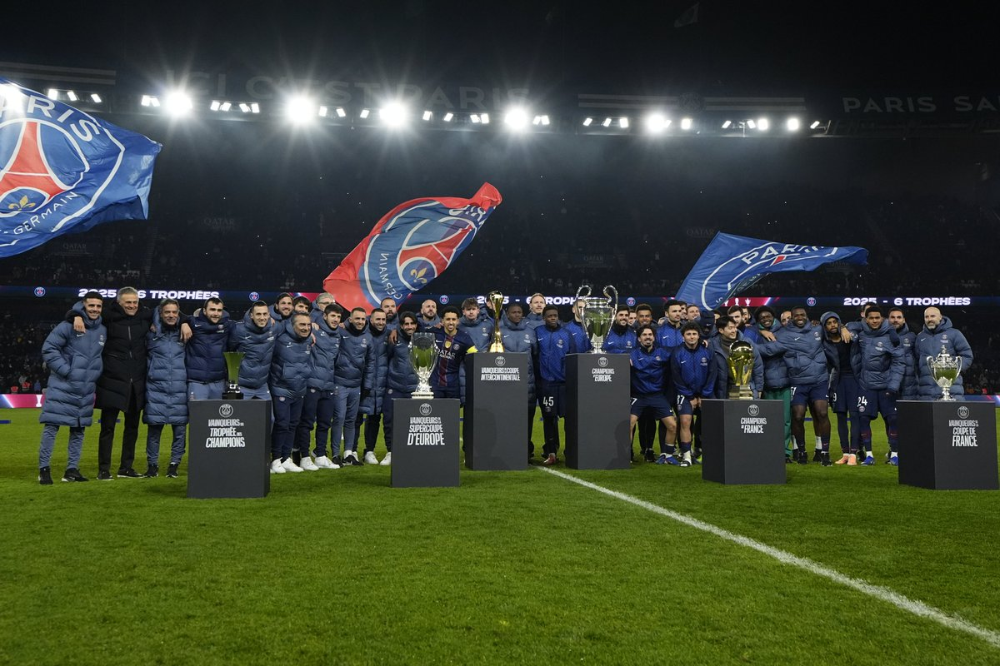

| domicile | Exterieur |
|---|---|
PARIS: 2025, Une année de tous les records !

Né de la fusion du Paris FC et de la section de Football du Stade Saint-Germanois en 1970, le Paris-Saint-Germain à su ce faire un nom en france puis en Europe tout au long de son histoire entre nuit de gloire et nuit d'humiliation Paris a tous connus. Jusqu'à l'arrivée d'un certain technicien Espagnol bourreau du PSG en Ligue des champions avec le barca en 2017, en la personne de Mr Luis Enrique. Le PSG sous ses ordres lors de la saison de 2023/2024, c'est triplé national et une élimination décevante en demi finale de ligue des champions face au Borussia Dortmund. Avec le départ de l'attaquant star du PSG Kylian Mbappé au Réal Madrid à l'aube de cette nouvelle saison, la question que tout le monde se pose c'est qui pourras remplacer Mbappé mais Luis Enrique a répondu à cette question en conférence de presse et a dit: "Je préfère avoir 12 joueurs qui marque 4 buts qu'un seul qui marque 50 buts". Le Paris-Saint-Germain a réaliser une saison 2024/2025 exceptionnelle en réalisant le premier sextuplé de son histoire et devenant le 3ème clubs à réaliser cette exploit derrière le barca 2009 et le Bayern 2020. En ayant une domination sans précédant sur ces adversaires, le PSG a démontré une force de caractère et une force physique incroyable dans n'importe quelle situation qu'on verra dans ce documentaire. Et pour commencer ce nouveau chapitre du Paris-Saint-Germain, il y aura 4 arrivées cet été 2024 et 1 arrivée pendant la trêve hivernale en Janvier 2025.

William Pacho

João Névès

MatveÏ Safonov

Désiré Doué

Khvicha Kvaratskhelia


/origin-imgresizer.eurosport.com/2025/12/17/image-dac4ba30-1030-40cf-adf4-3586f562d4dc-85-2560-1440.jpeg)